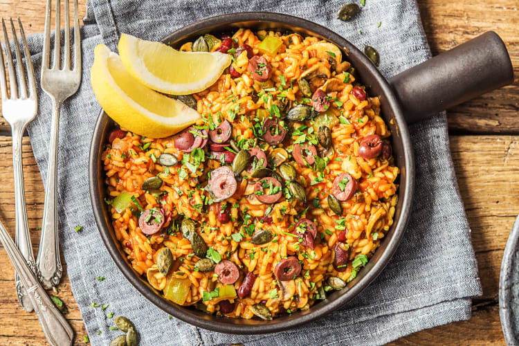

Paella

Ingredienten
- 2 teentjes knoflook
- 1 ui
- 200gr champignons
- 1 groene paprika
- 1/2 pot kidneybonen
- 12 takjes verse peterselie
- 20gr pompoenpitten
- 150gr rijst
- 2 theelepels paprikapoeder
- 1 theelepels gemalen kurkuma
- 1/2 blik tomatenpuree
- 1/2 citroen
- 30 gram olijven
Bereiding
- Bereid de bouillon in een pan met deksel. Snijd of pers de knoflook fijn en snipper de ui. Snijd de champignons in plakken. Verwijder de zaadlijsten van de groene paprika en snijd de paprika in blokjes. Laat de kidneybonen uitlekken in een vergiet. Snijd de peterselie fijn.
- Verhit een wok of hapjespan met deksel op hoog vuur en rooster de pompoenpitten, zonder olie, tot ze beginnen te poffen. Haal uit de pan en bewaar apart. Verhit de roomboter op middelhoog vuur in dezelfde wok of hapjespan en fruit de knoflook en ui 1 minuut op hoog vuur. Voeg de champignons toe en bak 2 - 3 minuten.
- Voeg de risottorijst, paprikapoeder, kurkuma en bouillon toe en schep om (zie tip). Voeg de paprika, kidneybonen, de tomatenpuree en de helft van de peterselie toe. Breng aan de kook en laat 20 minuten zachtjes koken op laag vuur. Roer nog een paar keer door.
- Snijd ondertussen de citroen in parten en de leccino olijven in ringen.
- Dek de laatste 10 minuten de wok of hapjespan af. Controleer of de rijst al het vocht heeft opgenomen en haal dan de pan van het vuur. Laat 5 minuten afgedekt nagaren, tot hij de juiste smeuïgheid heeft. Breng de paella op smaak met peper en zout.
- Knijp naar smaak de citroenpartjes uit over het gerecht en garneer het gerecht met de overige peterselie, olijven en pompoenpitten.